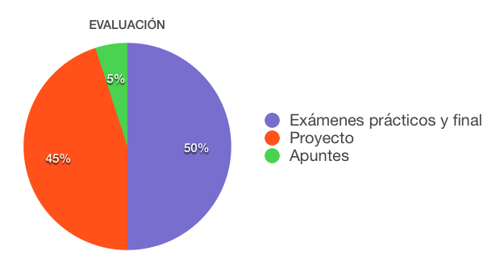

Actividades de
aprendizaje:
Actividades de
aprendizaje:|
TC 1028. Pensamiento Computacional para Ingeniería . |
Plan de evaluación
Para tu evaluación se considerarán los siguientes elementos:

Actividades de
aprendizaje:
•
Son todas las
actividades que realizarás, algunas podrán tener impacto en tu calificación
final y otras no, sin embargo, todas contribuirán al desarrollo de las
competencias establecidas para la materia.
•
Esta
materia se evalúa a través de diferentes competencias. Para desarrollar
estas competencias se llevarán a cabo laboratorios, exámenes de tema y un
proyecto que se desarrolla a lo largo del semestre.
•
Cada alumno tendrá una
rúbrica en la que se van a ir registrando las competencias que se van
desarrollando durante el semestre.
•
Las evidencias de
estas competencias se van observar en los exámenes de tema y en el
desarrollo del proyecto.
| Actividades | Porcentaje |
| Exámenes prácticos y final | 50% |
| Proyecto | 45% |
| Apuntes | 5% |
 Exámenes de tema y final
Exámenes de tema y final
Las
evaluaciones de las competencias en los exámenes se presentan de la siguiente
manera:
|
SING0102A Parámetros:
Si ____ No ____ Alcance:
Si ____ No ____ |
SING0302A Toma decisiones:
Si ____ No ____ |
SING0303A
Implementación:
Si ____ No ____
|
|
1) Conoce el concepto o técnica (Aplicación
de Métodos) 2) Usa el concepto o
técnica de forma adecuadas con el problema. (Análisis
de Información) 3) Usa recursos de apoyo
propios para no cometer errores básicos (Investigación
documental) |
1)Selecciona la técnica o
estatuto adecuado. (Decisiones) 2) Usa la información del
contexto para resolver el problema. (Identifica
Información crítica) 3) Aplica correctamente el
estatuto (Modelado básico) |
1) La solución resuelve el
problema. (Implementación) 2) Explica/Argumento
claramente para qué casos sirve su solución y cuáles serían sus
excepciones. (Análisis) |
En los exámenes de tema, ya sean en Canvas, escritos, o en ambas modalidades se evalúa si se demuestra la competencia.
Cada examen puede evaluar un grupo o varios grupos de competencias, la evaluación solamente indicará: SÍ SE OBSERVA o NO SE OBSERVA este grupo de competencias.
El hecho de que un alumno no tenga una competencia, solamente significa que todavía no se observa, pero aún puede adquirirla en lo que resta del curso.
En el caso de los exámenes y como parte de las competencias se evalúan también conceptos que se van desarrollando a través del curso, los conceptos son los siguientes: Conceptos básicos de desarrollo, representación, algoritmos, operadores, variables, funciones, paso de parámetros, alcance de una variable, condicionales, operadores booleanos, anidación condiciones, while, anidación ciclos, for, listas o arreglos, listas anidadas o matrices, cadenas, manipulación de archivos.
Y se deben tener acreditados 13 de estos 18 para que se cumpla una competencia.
Habrá exámenes en los que tengas que desarrollar estructuras o programas, deberás tener 4 de estos acreditados para poder cumplir otra competencia.
En el examen final tendrás que diseñar programas.
Debes revisar todas las especificaciones en tu rúbrica.
Proyecto
Al inicio debes entregar un documento con una descripción de tu proyecto, utilizando un formato que debes descargar del calendario.
Para poder hacer cada entrega de tu proyecto, deberás haber hecho tus laboratorios y tener Succeed en ellos.
Si no es así, no se tomará en cuenta la entrega del proyecto.
El proyecto se irá desarrollando agregando los diferentes conceptos e instrucciones que se van aprendiendo a lo largo del curso.
El proyecto evalúa cuatro subcompetencias, para tres de éstas se debe de poder observar 70% (6 de 8) de los temas integrados en el proyecto.
Para la última subcompetencia, debes de agregar algo más que hayas investigado por tu cuenta.
Debes revisar todas las especificaciones en tu rúbrica.
Reflexión del aprendizaje
En cada tema se ha colocado una actividad de reflexión sobre tu aprendizaje que te permitirá identificar áreas de oportunidad y diseñar un plan para trabajar en ellas.
Este tipo de actividades no afectarán directamente tu calificación, sin embargo, te recomiendo completarlas, ya que son parte integral de tu formación. lo
.
|
© 2019 Escuela de Computación y Mecatrónica . |